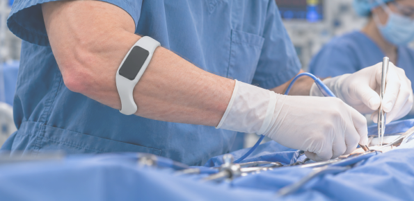
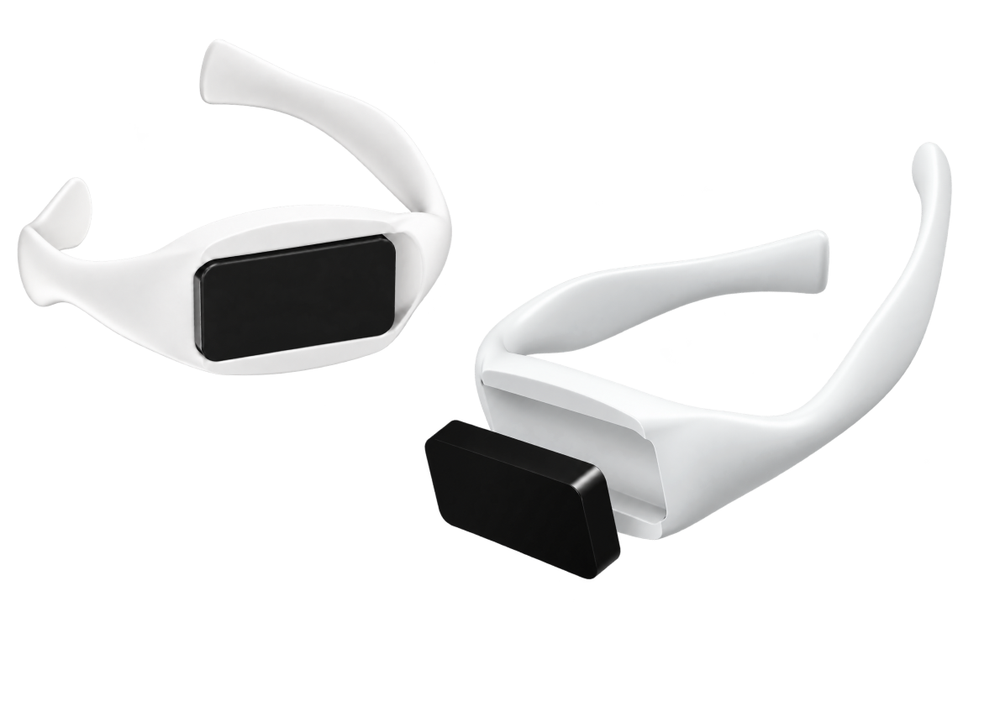
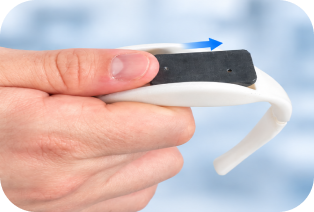

01

Insertá
Colocá el cristal en su alojamiento.
Una pulsera dosimétrica que pone la comodidad en primer plano.
Conocé el producto Ver cómo se usa
Pulsera TLD es una pulsera dosimétrica desarrollada para priorizar la comodidad, la practicidad y la adaptación al antebrazo.

Su diseño permite colocar y retirar el cristal dosimétrico de manera simple, manteniendo la pulsera cómoda durante el uso.
↻ Recambio sencillo♡ Cómoda y confortable♧ Fácil de limpiar✦ Liviana y resistenteEl cristal dosimétrico se inserta en su alojamiento y queda integrado a la pulsera para colocarla en la muñeca.
Colocá el cristal en su alojamiento.

Ubicá la pulsera en tu muñeca.

Extraé el cristal para su recambio.
Pensada para el uso cotidiano, con un ajuste anatómico que acompaña la forma de cada antebrazo.
Diseñada para el uso cotidiano.
Ajuste anatómico para cada antebrazo.


Una solución dosimétrica con foco en la experiencia de uso: liviana, confortable y con un sistema de recambio simple.